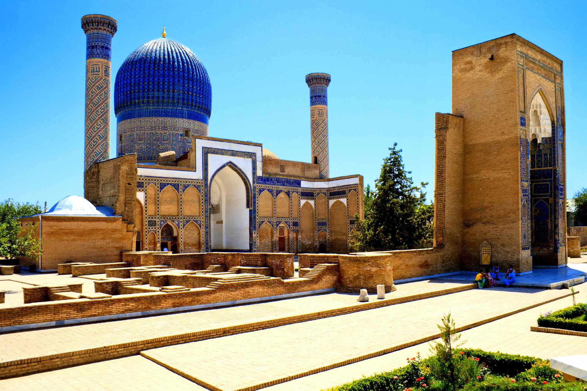
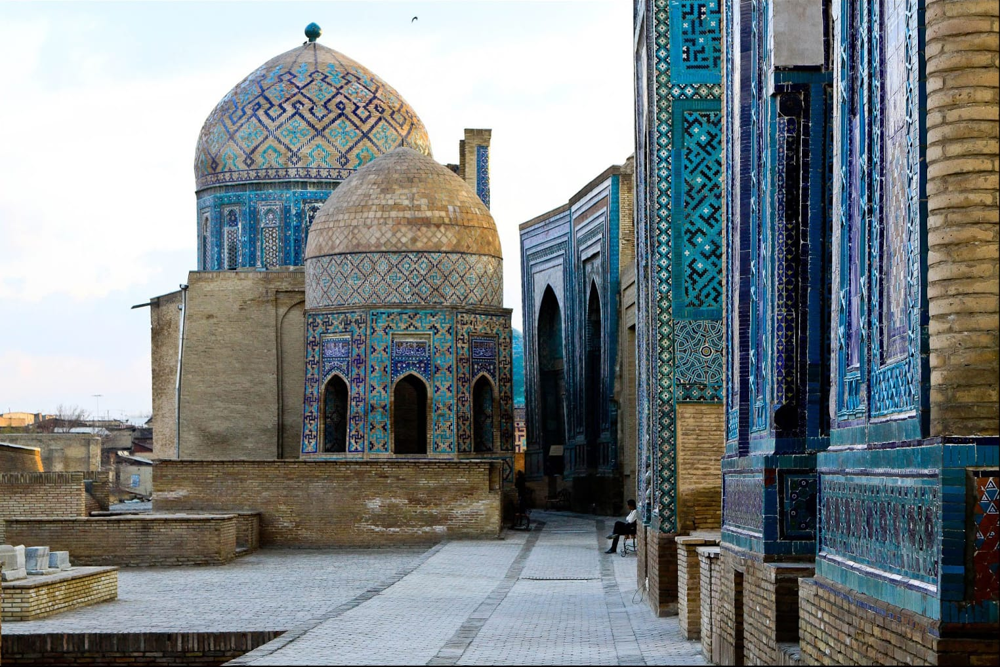
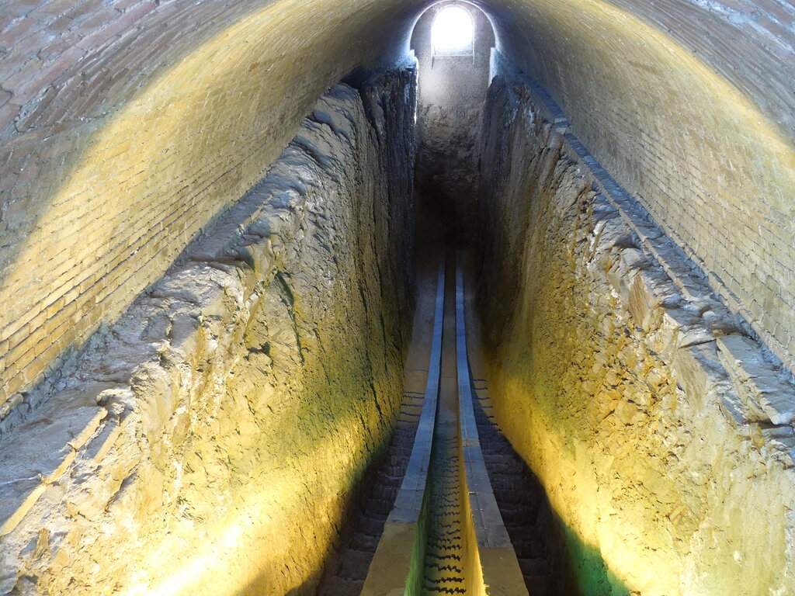
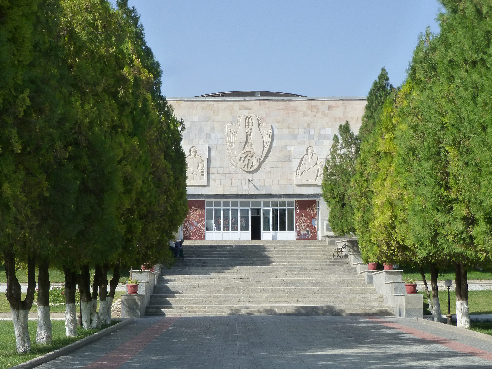

Die 2700 Jahre alte Stadt an der legendären Seidenstraße hat schon
immer Reisende in ihren Bann gezogen und bis zum heutigen Tag nichts
von ihrer Faszination verloren.
Samarkand- früher als Marakanda bekannt- war die Hauptstadt von
Sogdien, wurde 329 von Alexander dem Großen eingenommen. Samarkand
überlebte den Einmarsch und die Zerstörungen durch die Truppen von
Dschingis Chan. Nach einer Revolte gegen die mongolischen
Unterdrücker begann Samarkand unter Timur und seinen Söhnen seinen
Aufstieg zur wichtigsten Kultur- und Handelsstadt in Mittelasien.
Die Architekturdenkmäler, für die Samarkand berühmt ist, und die
noch heute wirken wie aus 1001 Nacht, entstanden zwischen dem 15.
Und 17. Jahrhundert.

Registan
Der Registan von Samarkand ist das bekannteste Symbol Usbekistans
und gehört zum Weltkulturerbe der UNESCO. Das Ensemble besteht aus
drei Medresen: Ulugbek Medrese (15. Jahrhundert), Sherdor Medrese
(17. Jahrhundert) und Tillakori Medrese (vergoldet, 17.
Jahrhundert)

Gur Emir
Gur Emir, übersetzt heißt es „Grab des Gebieters“, wurde Ende des
14. bis in die Mitte 15. Jahrhunderts als Grabstätte der Timuriden
errichtet. Auf Timurs Befehl wurde es für seinen geliebten Enkel
Muhammed Sultan, der unerwartet 1403 starb, projektiert.

Nekropole Shohizinda
Südlich von Afrosiyob befindet sich die eindrucksvolle Nekropole
Shohizinda. Von Norden nach Süden sind an einem engen, siebzig
Meter langen Korridor sechzehn Gebäude, Mausoleen und Moscheen
angeordnet. Die Nekropole entstand neben der hier vermuteten
Grabstätte Qussam ibn Abbos, den Cousin der Propheten Muhammeds
s.a.v. Er wird in den Legenden als der „lebendige Herrscher“, also
Shohizinda bezeichnet.

Bibi Chanum
Erbaut wurde die Moschee Bibi Chanum von 1399 bis etwa 1404 auf
Befehl des mittelasiatischen Herrschers Timur (Tamerlan). Zuvor
hatte Timur in mehreren erfolgreichen Feldzügen seine Macht von
Syrien bis Indien ausgedehnt und war zum mächtigsten Herrscher der
islamischen Welt aufgestiegen. Mit dem Bau der neuen
Freitagsmoschee in seiner Hauptstadt Samarkand wollte Timur seiner
Macht und seinem politischen und religiösen Anspruch ein Zeichen
setzen. Das Bauwerk, dessen Errichtung er zeitweise selbst
überwachte und korrigierte, konnte bis zu seinem Tod 1405 nicht
ganz vollendet werden. Im 15. Jahrhundert war sie eine der größten
und prächtigsten Moscheen der islamischen Welt. Bis zur Mitte des
20. Jahrhunderts war von ihr nur noch eine grandiose Ruine
erhalten geblieben, doch inzwischen sind bedeutende Teile der
Moschee durch Restaurierung wiederhergestellt worden.

Das Observatorium des Ulug’bek
Auf einem Hügel im Nordosten der Stadt wurden 1908 die Überreste
einer Forschungsstätte freigelegt. Chroniken aus dem 17.
Jahrhundert führten zum Fund der Sternwarte durch den russischen
Archäologen Vjatkin (1869-1963)

Afrosiyob
Hier befand sich das erste Samarkand, die in der Awesta erwähnte
legendäre Hauptstadt der Sogden. Man findet es in den Chroniken
der Griechen, Perser, Chinesen und Araber. Die Erforschung
Afrosiyobs begann Ende des 19. Jahrhunderts. Jetzt sind hier die
Ausgrabungen zu besichtigen, die für Nicht-Archäologen jedoch nur
schwer nachzuvollziehen sind.